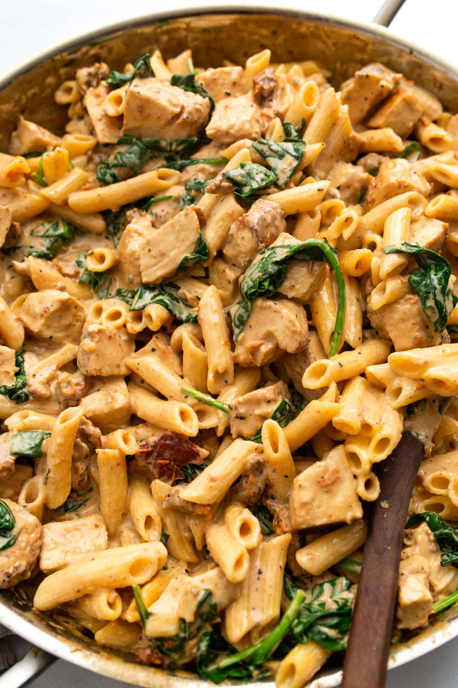

Creamy Chicken Pasta
Home

Description
Creamy chicken pasta made in under 10-15 minutes. Requires a low amount of ingredients. The heavy cream here is key, and makes all the difference. Tasty and good source of protein if in a rush or simply too lazy too cook something complex.
Ingredients
- Pasta
- Chicken Breast
- Spinach
- Heavy Cream
- Cherry Tomatoes
- Salt
- Pepper
- Paprika
Steps
- Dice chicken
- Put in a bowl and season with salt, pepper and paprika./li>
- Mix with hands until all pieces are well seasoned.
- Put in a pan on medium heat, add sliced cherry tomatoes.
- Bring water to a boil in a pot.
- Cook pasta for the required time (as shown on box usually).
- Right before chicken is completley cooked, add a bit of heavy cream to the chicken in the pan.
- Ensuring pasta is cooked, empty the chicken, cooked cherry tomatoes and sauce into the pot.
- Add spinach, mix and let settle for a few minutes.
- Enjoy!